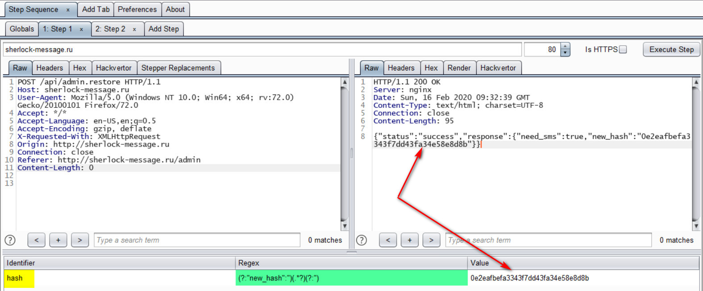
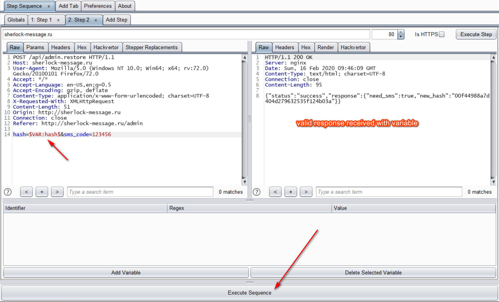
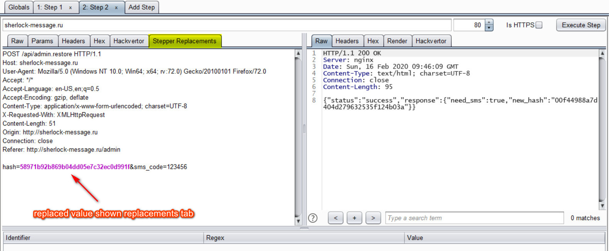

Introduction to Burp Suite Plugin Stepper
Posted on Mon 17 February 2020 in Tutorials by 0xm4v3rick
While trying to solve a CTF challenge I was in a situation where I needed to do multiple steps inorder to test the challenge. Although I wasn't able to solve the challenge I learned a few things along the way while trying out stepper for the first time. So here is small intro on how stepper can be used in such cases. This is pretty biginner level stuff. May help someone struggling to get started with it. The plugin is available here or can be downloaded from the BApp Store.
Let's get started with the challenge scenario. Below POST request returned a hash value as shown in response. The hash value was needed to be included in the next request to validate the SMS.
Request1:
1 2 3 4 5 6 7 8 9 10 11 | POST /api/admin.restore HTTP/1.1
Host: sherlock-message.ru
User-Agent: Mozilla/5.0 (Windows NT 10.0; Win64; x64; rv:72.0) Gecko/20100101 Firefox/72.0
Accept: */*
Accept-Language: en-US,en;q=0.5
Accept-Encoding: gzip, deflate
X-Requested-With: XMLHttpRequest
Origin: http://sherlock-message.ru
Connection: close
Referer: http://sherlock-message.ru/admin
Content-Length: 0
|
Response1:
1 2 3 4 5 6 7 8 | HTTP/1.1 200 OK
Server: nginx
Date: Sun, 16 Feb 2020 09:32:39 GMT
Content-Type: text/html; charset=UTF-8
Connection: close
Content-Length: 95
{"status":"success","response":{"need_sms":true,"new_hash":"0e2eafbefa3343f7dd43fa34e58e8d8b"}}
|
SMS validation request is as below. Uses hash value from previous request(above) along with the sms code. Request2:
1 2 3 4 5 6 7 8 9 10 11 12 13 14 | POST /api/admin.restore HTTP/1.1
Host: sherlock-message.ru
User-Agent: Mozilla/5.0 (Windows NT 10.0; Win64; x64; rv:72.0) Gecko/20100101 Firefox/72.0
Accept: */*
Accept-Language: en-US,en;q=0.5
Accept-Encoding: gzip, deflate
Content-Type: application/x-www-form-urlencoded; charset=UTF-8
X-Requested-With: XMLHttpRequest
Content-Length: 51
Origin: http://sherlock-message.ru
Connection: close
Referer: http://sherlock-message.ru/admin
hash=0e2eafbefa3343f7dd43fa34e58e8d8b&sms_code=123456
|
Response2:
1 2 3 4 5 6 7 8 | HTTP/1.1 200 OK
Server: nginx
Date: Sun, 16 Feb 2020 09:32:39 GMT
Content-Type: text/html; charset=UTF-8
Connection: close
Content-Length: 95
{"status":"success","response":{"need_sms":true,"new_hash":"5c608733c8545b4633cc31a400959e03"}}
|
As we can see a new token is returned in the above response. The old one expires and gives error if used again. In order to test the validation request, the new token is required to be used in the next SMS validation request. The hash acts like a anti-CSRF token here. So repeating first request, than copying the hash/token and using it in second request becomes a lot of tedious work using just the repeater. This is where stepper comes in and does a lot of heavy lifting. Let's see how it can be used.
We send the first request to the stepper and use a regex to capture the token/hash from response. Create a variable using Add Variable for that, random variable name will be created.
Tip: Variables can be renamed by double clicking the Identifier.

Let's understand how the follwoing regex is used. Regex: (?:"new_hash":")(.*?)(?:")
First group of the regex (?:"new_hash":") is non-capturing, proves as a starting point for the string and checks occurrence of "new_hash":"
Second group (.*?) which is capturing group, will collect everything after the first group untill the third group is found.
Third group (?:") again a non capturing group to mark end of collection and it checks for "
More explanation can be found by inserting the above regex here
Now the captured hash is stored in hash variable. These variables can be accessed using the syntax $VAR:VARIABLE_IDENTIFIER$ or $var:VARIABLE_IDENTIFIER$.
We forward the second request to stpper now and use the previously collected hash here using $VAR:hash$. Now we can Execute Sequence and second step should take the hash from first step and use it. Execute Sequence executes all the steps mentioned there from Step 1 to Step 2 to ... Step N in that order.

Let's check the Stepper Replacement tab as below and we should see the variable being replaced by the actual value. Alternatively another plugin such as logger++ or flow can also be used to check that variables are replaced as required.
Note: Hash value varies here because I took the screenshot later on.

Now insert your payloads and start testing the same away as repeater. A sample request with a payload would look something like below. Insert your payloads and hit Execute Sequence and it should work smoothly.
1 2 3 4 5 6 7 8 9 10 11 12 13 14 | POST /api/admin.restore HTTP/1.1
Host: sherlock-message.ru
User-Agent: Mozilla/5.0 (Windows NT 10.0; Win64; x64; rv:72.0) Gecko/20100101 Firefox/72.0
Accept: */*
Accept-Language: en-US,en;q=0.5
Accept-Encoding: gzip, deflate
Content-Type: application/x-www-form-urlencoded; charset=UTF-8
X-Requested-With: XMLHttpRequest
Content-Length: 51
Origin: http://sherlock-message.ru
Connection: close
Referer: http://sherlock-message.ru/admin
hash=$VAR:hash$&sms_code=1'--
|
We can also use the same variable again anywhere in the request. An example of this would be something like below.
1 | hash=$VAR:hash$&sms_code=$VAR:hash$
|
That's it. Effective way to use the stepper and continue the testing on the request without tedious back and forth between multiple request using multiple values. Feel free to ping me on twitter for any feedback or queries. I will try to help as much as I can.